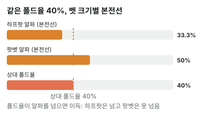

안녕하세요. A01에서 알파(블러프가 본전이 되려면 상대가 폴드해야 하는 비율), A02에서 MDF(상대 블러프를 막으려면 우리가 지켜야 하는 최소 비율)를 배웠죠.
두 글을 따로 읽으면 공식 두 개를 외운 것 같지만, 사실 이 둘은 같은 벳 하나를 테이블 양쪽에서 본 숫자예요. 오늘은 그 연결을 끝까지 따라가 볼게요.
이 글에서 배울 것
- 같은 벳에서 알파 + MDF = 전체가 되는 이유를 분모·분자로 직접 따져 보기
- 블러프 EV를 (상대 폴드율 − 알파) × (팟 + 벳) 한 줄로 읽는 법, 그리고 그게 맞는 쪽 실수와 어떻게 이어지는지
- 늘 같은 비율로 접는 상대에게 벳 크기 하나로 블러프가 이득도 손해도 되는 이유
오늘의 장면
A01·A02와 같은 리버예요. 보드는 K♠ 9♠ 4♥ 7♦ 2♣, 팟 12BB.
Hero는 빗나간 드로우 6♠5♠로 상대 체크에 9BB(3/4팟) 블러프를 걸었어요. 상대는 9♥8♥ 같은 블러프캐처(Hero 블러프만 이기는 핸드)를 들고 콜이냐 폴드냐를 정해야 해요.
Hero는 "상대가 몇 번 접어 줘야 내 블러프가 본전이지?"를, 상대는 "내가 몇 번 지켜야 Hero 블러프가 남지 않지?"를 물어요. 같은 9BB를 두고 두 사람이 서로 다른 질문을 하는 거예요. 동전 앞면이 Hero의 질문, 뒷면이 상대의 질문이에요.
A01·A02와 같은 가정이에요. Hero 블러프는 콜을 받으면 항상 지고, 상대는 콜 아니면 폴드만 한다.
1단계. 같은 벳, 두 가지 질문
숫자 두 개
- Hero(벳하는 쪽): 알파 = 9(벳) ÷ (12(벳 전 팟) + 9(벳)) = 9 ÷ 21 = 42.9%
- 상대(맞는 쪽): MDF = 12(벳 전 팟) ÷ (12 + 9) = 12 ÷ 21 = 57.1%
왜 더하면 전체일까
분모가 둘 다 팟 + 벳 = 21이에요. 분자만 하나는 벳 9, 하나는 팟 12예요. 9 + 12 = 21이니, 두 조각을 합치면 분모와 같아져요.
두 숫자의 합은 피자 한 판을 둘이 나누는 그림으로 보면 쉬워요. 판 크기(팟 + 벳)는 정해져 있고, Hero의 조각(벳)이 커지면 상대의 조각(팟)이 그만큼 작아져요. 합은 늘 한 판이죠.
이게 무슨 뜻이냐면
상대의 폴드는 곧 Hero 블러프의 성공이에요. 그래서 "Hero가 성공해야 하는 비율"과 "상대가 지켜야 하는 비율"은 같은 선을 양쪽에서 부른 이름이에요. 그 선이 42.9% : 57.1%로 나뉘어 있을 뿐이죠.
2단계. 그 선 위에 서면 Hero 블러프는 본전
A01에서 본 본전 계산을 3/4팟에 그대로 쓰면, 상대가 7번 중 3번 접을 때(알파 42.9%) Hero 블러프 7번은 폴드로 36BB를 얻고 콜로 36BB를 잃어 딱 본전이에요.
- 상대가 선보다 더 접으면 → Hero 블러프가 이득(상대가 손해)
- 상대가 선보다 더 지키면 → Hero 블러프가 손해(상대가 이득)
이 본전 계산은 앞 두 글에서 이미 봤으니, 오늘은 "선에서 얼마나 벗어났나"를 돈으로 바로 읽는 법으로 넘어갈게요.
3단계. 블러프 EV를 한 줄로 읽기
얼마나 벗어났느냐 × 판 크기
A01에서는 블러프 EV를 "폴드율 × 팟 − 콜 비율 × 벳"으로 구했죠. 이걸 정리하면 더 보기 쉬운 모양이 돼요.
블러프 EV = (상대 폴드율 − 알파) × (팟 + 벳)
상대가 본전선(알파)을 얼마나 넘었는지에 판 크기(팟 + 벳)를 곱한 거예요. 폴드율이 알파와 같으면 괄호가 0이라 EV도 0, 알파보다 크면 플러스, 작으면 마이너스예요.
왜 이렇게 되냐면
폴드율을 f라고 하면 EV = f × 팟 − (1 − f) × 벳 = f × (팟 + 벳) − 벳이에요. 그런데 벳 = 알파 × (팟 + 벳)이니까(알파의 정의), 둘을 묶으면 (f − 알파) × (팟 + 벳)이 돼요.
이게 무슨 뜻이냐면
괄호 안의 "f − 알파"는 상대가 MDF보다 얼마나 덜 지켰는지와 똑같아요. 1 − f가 상대가 지킨 비율이고, 1 − 알파가 MDF니까요.
그러니까 Hero가 블러프로 버는 돈 = 상대가 MDF에서 모자란 만큼 × 판 크기예요. 한쪽 자리의 이득은 다른 쪽 자리의 실수를 그대로 비춰요. 이게 "동전의 양면"의 진짜 뜻이에요.
4단계. 늘 40% 접는 상대에게 두 가지 크기
이번엔 상대가 벳 크기와 상관없이 늘 40%를 접는 사람이라고 해요. 같은 팟 12BB에서 Hero가 하프팟과 팟벳을 비교해 봐요.
| 벳 크기 | 벳 | Hero의 알파 | 상대의 MDF | 상대가 실제로 지키는 비율 | Hero 블러프 EV |
|---|---|---|---|---|---|
| 하프팟 | 6BB | 33.3% | 66.7% | 60% | +1.2BB |
| 팟벳 | 12BB | 50% | 50% | 60% | −2.4BB |

하프팟: 상대가 뚫려요
Hero 쪽에서: 폴드 40%가 알파 33.3%보다 커요. EV = (0.4 − 1/3) × 18 = 1.2BB. 블러프가 이득이에요.
상대 쪽에서: 지키는 60%가 MDF 66.7%보다 작아요. 지켜야 할 만큼 못 지켜서, Hero가 아무 핸드로나 하프팟을 걸면 돈을 벌어요.
팟벳: 상대가 막아요
Hero 쪽에서: 폴드 40%가 알파 50%보다 작아요. EV = (0.4 − 0.5) × 24 = −2.4BB. 블러프가 손해예요.
상대 쪽에서: 지키는 60%가 MDF 50%보다 커요. 넉넉히 지켜서 Hero의 팟벳 블러프를 막아요.
이게 무슨 뜻이냐면
상대는 아무것도 바꾸지 않았어요. 늘 40% 접었을 뿐이에요. 그런데 Hero가 고른 벳 크기가 본전선을 옮겨서, 같은 상대가 하프팟에는 뚫리고 팟벳에는 막는 사람이 됐어요.
그래서 벳하는 쪽에게 벳 크기는 "상대의 폴드 습관이 어느 본전선 아래로 떨어지는지 고르는 일"이에요. 실제 상대는 벳 크기에 따라 폴드율을 바꾸기도 하는데, 그 관계는 A20에서 다뤄요.
5단계. 벳 크기별로 한눈에
같은 팟 12BB에서 앞 글에 없던 크기까지 넣어 볼게요.
| 벳 크기 | 벳 | 알파 | MDF | 콜하는 쪽 필요 에퀴티 |
|---|---|---|---|---|
| 1/4팟 | 3BB | 20% | 80% | 16.7% |
| 하프팟 | 6BB | 33.3% | 66.7% | 25% |
| 3/4팟 | 9BB | 42.9% | 57.1% | 30% |
| 팟벳 | 12BB | 50% | 50% | 33.3% |
| 1.5배 오버벳 | 18BB | 60% | 40% | 37.5% |
- 오른쪽 필요 에퀴티는 핸드 하나의 콜 기준이에요. 알파는 상대 레인지 전체가 접는 비율과, MDF는 맞는 쪽 레인지 전체가 지키는 비율과 비교하는 숫자예요
왜 그럴까: Hero의 본전선이 곧 상대의 방어선이라서
두 사람은 같은 돈을 두고 다퉈요
Hero 블러프에서 오가는 돈은 팟 12BB와 벳 9BB뿐이에요. Hero가 버는 돈은 상대가 잃는 돈이고, Hero가 잃는 돈은 상대가 버는 돈이에요.
그래서 Hero 블러프가 본전이 되는 폴드율(알파)과 상대가 Hero 블러프에 털리지 않는 방어 비율(MDF)은 같은 선을 가리킬 수밖에 없어요. 한 선을 Hero는 "폴드율"로, 상대는 "지키는 비율"로 부르는 거예요.
상대의 "콜 본전"과는 다른 이야기예요
조심할 게 하나 있어요. MDF는 상대가 레인지에서 얼마나 지키느냐의 선이지, 상대 핸드 하나가 콜해서 본전이냐의 선이 아니에요. 9♥8♥ 한 장의 콜 본전은 필요 에퀴티(3/4팟이면 30%)가 정하고, 그건 Hero 벳 속에 블러프가 얼마나 섞였나에 달려 있어요(A02에서 구분했죠).
선 위에 서면 Hero는 고민할 이유가 사라져요
상대가 딱 MDF만큼 지키면 Hero의 6♠5♠ 블러프는 해도 0, 체크해도 0이에요. Hero 입장에서 블러프를 할지 말지가 상관없어지는 것이죠. 서로가 상대를 이렇게 만드는 지점이 이론적인 균형이고, 그 이야기는 고급 글에서 이어져요.
자주 하는 실수
실수 1. 알파와 MDF를 서로 다른 계산으로 따로 외우기 두 공식을 따로 외우면 실전에서 하나를 잊어요. 오늘 3/4팟에서 알파 42.9%를 구했다면 MDF는 계산할 필요도 없이 57.1%예요. 하나만 구하고 전체에서 빼세요.
실수 2. 상대가 "40% 접는 사람"이면 블러프가 늘 이득이거나 늘 손해라고 생각하기 오늘 같은 40% 폴드인데 하프팟에선 +1.2BB, 팟벳에선 −2.4BB였어요. 폴드율 하나로는 판정이 안 나요. 그 폴드율을 지금 벳 크기의 알파와 나란히 놓아야 해요.
실수 3. MDF를 넘게 지키면 손해라고 생각하기 상대가 팟벳에 60%를 지킨 건 MDF 50%보다 많았지만, 그 덕에 Hero의 블러프가 −2.4BB가 됐어요. 블러프만 놓고 보면 MDF보다 더 지켜서 손해 볼 일은 없어요. 다만 더 지킨 핸드가 상대 밸류 벳에 지는 손해가 따로 생길 수 있어서, 얼마나 더 지킬지는 상대 벳의 구성을 봐야 해요(A04·A07에서 다뤄요).
"그럼 상대가 MDF보다 많이 지키면 블러프를 아예 안 해요?"
좋은 질문이에요. 콜을 받으면 늘 지는 순수한 블러프라면 그 크기의 블러프는 손해니 줄여야 해요. 아니면 상대 폴드율이 알파를 넘는 다른 크기를 찾아보죠.
하지만 드로우처럼 콜을 받아도 남은 카드로 이길 기회가 있는 핸드는 계산이 달라요. 콜을 받아도 0이 아니니까요. 이걸 세미블러프라고 하고 A22에서 배워요.
선생님의 한마디
벳 하나를 보면 이렇게 두 자리를 같이 떠올려요.
- 벳 ÷ (팟 + 벳)으로 알파를 구하고, 전체에서 빼서 MDF
- 내가 벳하는 쪽이면: "이 상대의 폴드율이 알파 위인가?"
- 내가 맞는 쪽이면: "내가 지키는 비율이 MDF 위인가?" — 아래면 상대는 아무 핸드로나 벳해서 벌어요
연습 문제
학습툴에는 알파를 직접 넣는 칸이 없어요. 홀덤학습 팟 오즈 퀴즈 Lv.5(블러프 본전)로 같은 계산을 연습해 보세요. MDF는 Lv.5 해설 끝의 "상대의 최소 방어율"과 같아요.
문제 1. 턴 팟 10BB에 Hero가 8BB 블러프. ① 알파와 MDF는? ② 상대는 이 벳에 절반을 지켜요. 상대는 MDF보다 얼마나 덜 지킨 걸까요? 그걸로 3단계 한 줄 공식을 써서 Hero 블러프 EV를 구하고, 긴 식으로도 확인해 보세요.
정답 보기
① 알파 = 8 ÷ (10 + 8) = 44.4%, MDF = 10 ÷ (10 + 8) = 55.6%. ② 상대가 지킨 건 절반, MDF는 55.6%라 그만큼 덜 지켰어요. 폴드율 0.5가 알파 8/18보다 큰 만큼이 괄호 안에 들어가요. 한 줄 공식: EV = (0.5 − 8/18) × 18 = 9 − 8 = +1BB. 긴 식: EV = 0.5 × 10 − 0.5 × 8 = 5 − 4 = +1BB. 두 방식이 같아요.
문제 2. 팟 12BB. 벳하는 쪽이 맞는 쪽의 MDF를 60%로 맞추고 싶어요. 벳을 얼마로 해야 할까요? 그때 벳하는 쪽 알파는?
정답 보기
MDF = 12 ÷ (12 + 벳)이 60%가 되려면 12 + 벳 = 20, 즉 벳은 8BB(2/3팟)예요. 확인: 12 ÷ (12 + 8) = 60%. 알파 = 8 ÷ (12 + 8) = 40%. 피자 한 판이 40 : 60으로 나뉜 거예요.
핵심 정리
- 같은 벳에서 알파 = 벳 ÷ (팟 + 벳), MDF = 팟 ÷ (팟 + 벳). 분모가 같아서 둘을 더하면 늘 전체예요
- 알파와 MDF는 같은 본전선을 벳하는 쪽·맞는 쪽에서 부른 이름이에요
- 블러프 EV = (상대 폴드율 − 알파) × (팟 + 벳) = 맞는 쪽이 MDF에서 모자란 만큼 × 판 크기
- 벳 크기는 본전선을 옮겨요. 같은 폴드율도 작은 벳엔 뚫리고 큰 벳엔 막을 수 있어요
- 팟벳에서 알파와 MDF는 둘 다 50%로 만나요
정리하며
오늘은 3/4팟 벳 하나를 두 자리에서 봤어요.
벳하는 쪽의 알파 42.9%와 맞는 쪽의 MDF 57.1%가 같은 분모에서 나와 합이 전체가 된다는 걸 확인했고, 블러프 EV가 결국 "맞는 쪽이 MDF에서 모자란 만큼 × 판 크기"라는 것도 봤죠. 그래서 늘 40% 접는 상대도 벳 크기에 따라 뚫리기도 하고 막기도 했어요.
실전에서는 벳 하나를 보면 알파를 구하고 전체에서 빼서 MDF까지 한 번에 떠올리세요. 어느 자리에 앉아 있든 같은 선을 보고 있는 거예요.
다음 글 A04에서는 이 MDF를 실제 리버 팟벳 한 판에 써 봐요. MDF로는 콜해야 할 것 같은 탑페어를 상대 레인지 안에서 다시 세어 보면 무엇이 달라지는지 다뤄요.
AI 작성 · 숫자는 계산 검증 · 블러프는 콜을 받으면 항상 진다고 가정(콜 아니면 폴드)